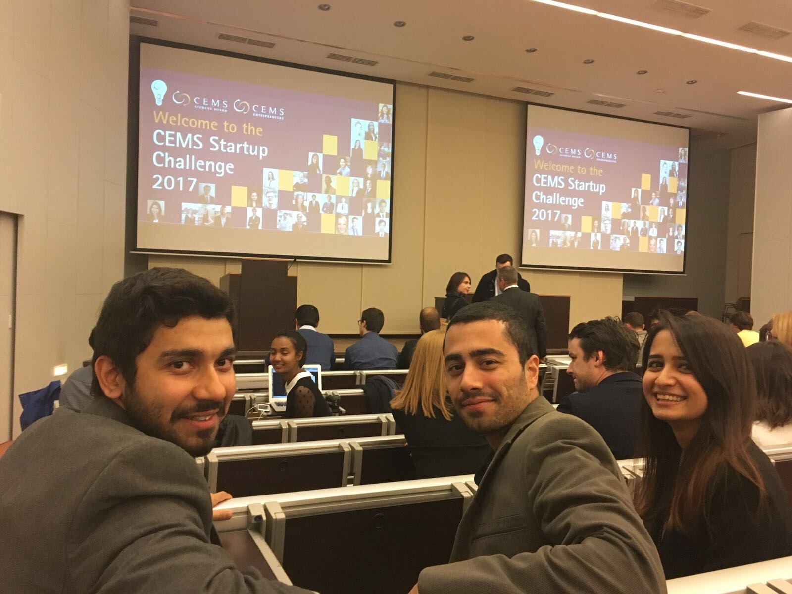
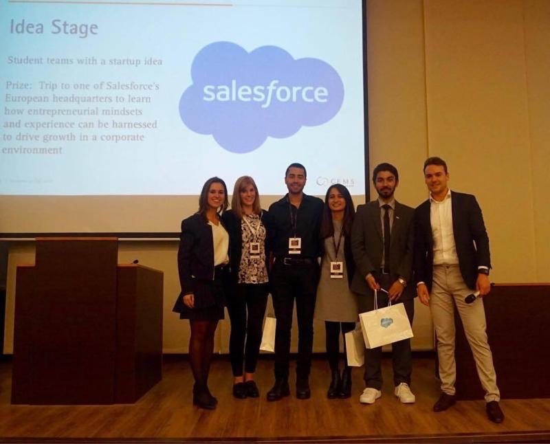

Passingo
Product design for Startup Challenge
Project: Startup Ideation & Product Design
Duration: 2 months
Team: Mustasim Azhar, Zeynep Karakaya, Efe Yardimci
My Role: Product design
Objective
We worked on this project for a submission to Global Startup Challenge in 2017. The challenge was sponsored by Salesforce, Gartner, and LVMH and took place in Budapest in November 2017. Our startup idea to compete in the challenge was having an NFC enabled mobile global transportation card wallet.
Introduction
As a team of three, we signed up for CEMS Startup Challenge in 2017 when I was pursuing my Master's in International Management degree. As the competition had two different stages, we applied for idea stage. Back then, I had not met user experience design field, however I know realize that what I did during the project was basically product design.
Ideation & Product Design
We had the idea of creating a mobile application for local transportation cards back in 2016. So, we decided to work on this idea and improve it for the challenge. Accordingly, we made research and observed the opportunities within the field. In the end we noticed that our smartphones already have the technology we need for tapping our phones instead of using paper or plastic cards. Moreover, the banking system was already developed for enabiling topping-up the transport cards through the application. As a result, we decided to combine these to create a new offering especially for the people who travel a lot and need to register for a new transportation card wherever they go.
The name of the application has come up by merger of "Pass & Go". We decided to go with this as our main goal was enabling payment through the smart phones.
Startup Challenge
After submitting our business canvas and executive summary, as a team, we have been invited for the finals in Budapest. Which meant we will be one of the first five teams who will be getting mentoring from European entrepreneurs, VCs and sponsor companies. Over there, we had the chance to talk about our idea and improve it with the feedback of the mentors we met. As the audience was going to be very mobile international students and professionals, we shaped our presentation to activate audience and capture their attention as the opportunity we were talking about was most people's pain point. In the end, we have been ranked as 1st among all other teams.
Reflection
When we were working on this project, we had other yeam members but they did not want to spend their times on it so they left the team. Accordingly, other partner and I needed to recruit new people time to time who took a major role on improvement of the project. When looked back I understand that some critical moves like this might be very important in the end. For instance, our friend who joined lately, he already had an experience in transportation sector and NFC technology, so that his knowledge added value to the project a lot. It was very important not to quit or be demotivated even when people are quitting or not working as hard work always pays-off.